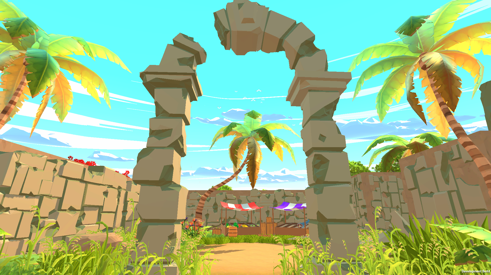
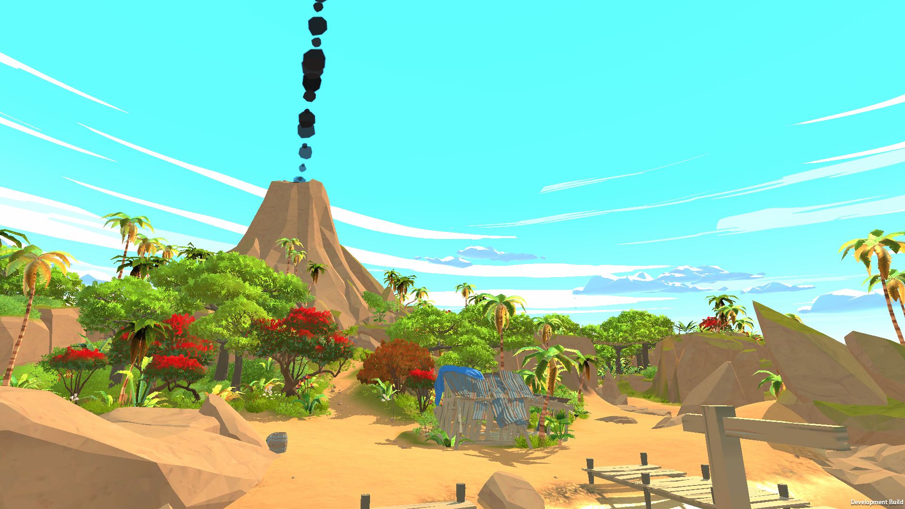
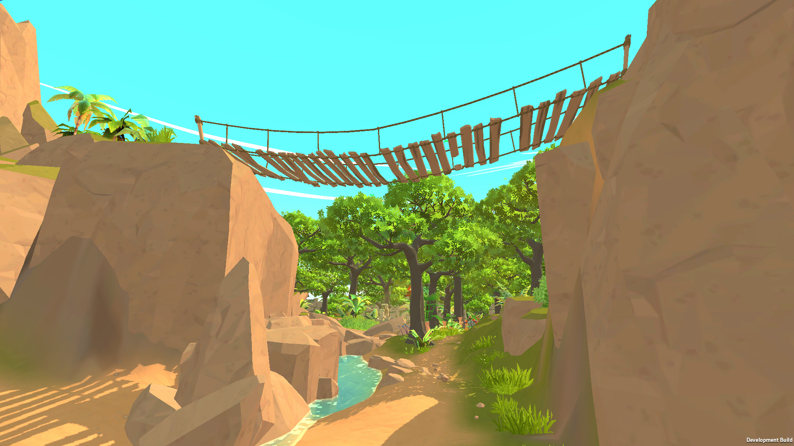
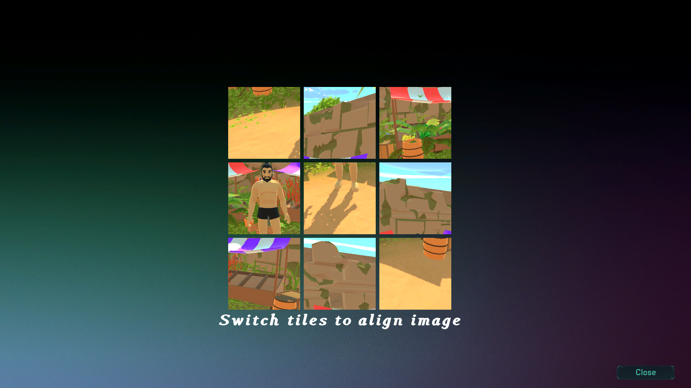
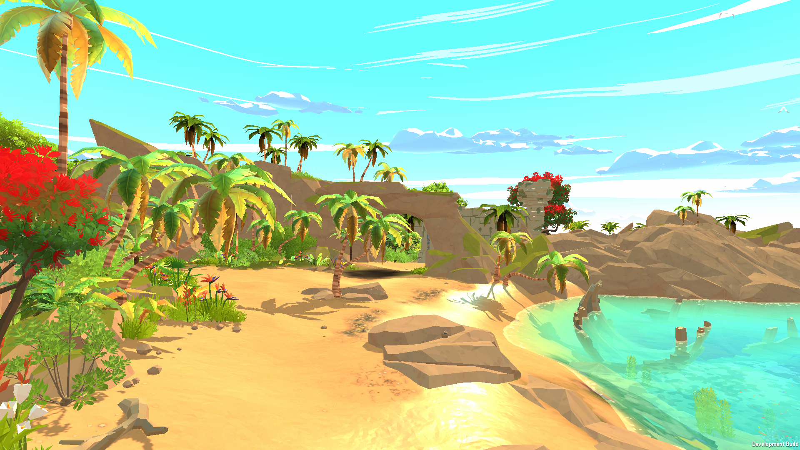
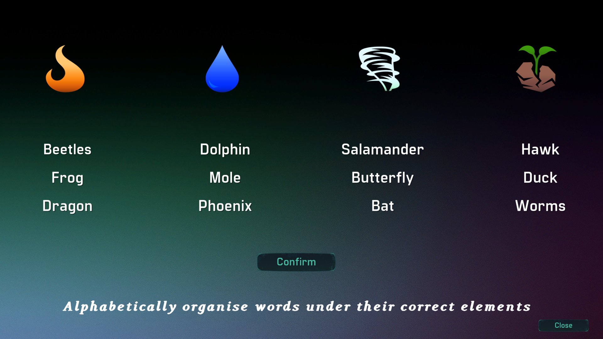
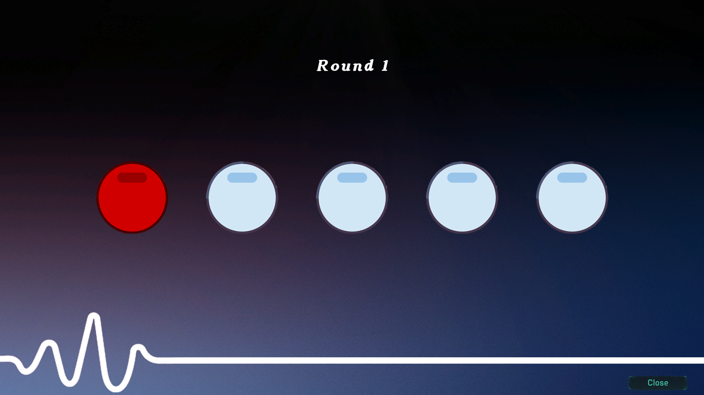

Description
In RYNEL, a 3D puzzle adventure game, you take on the role of Dr. Rynel, a brilliant anthropologist and biologist who has dedicated his life to understanding the hidden mysteries of the jungle’s rare and enigmatic creatures. With your friend and research partner, Dr. Alex Rivera, you have made incredible strides in the study of unknown species, some with remarkable abilities that blur the line between myth and science. However, during an experiment in your research lab, a catastrophic event causes Alex to be teleported into the heart of the jungle through a mysterious portal. Now, it's up to you to brave the perils of the jungle, solve intricate puzzles, study extraordinary creatures, and ultimately rescue them.
Game
Showcase
Screenshots
|  |  |
|  | |
|  |  |
|  |  |